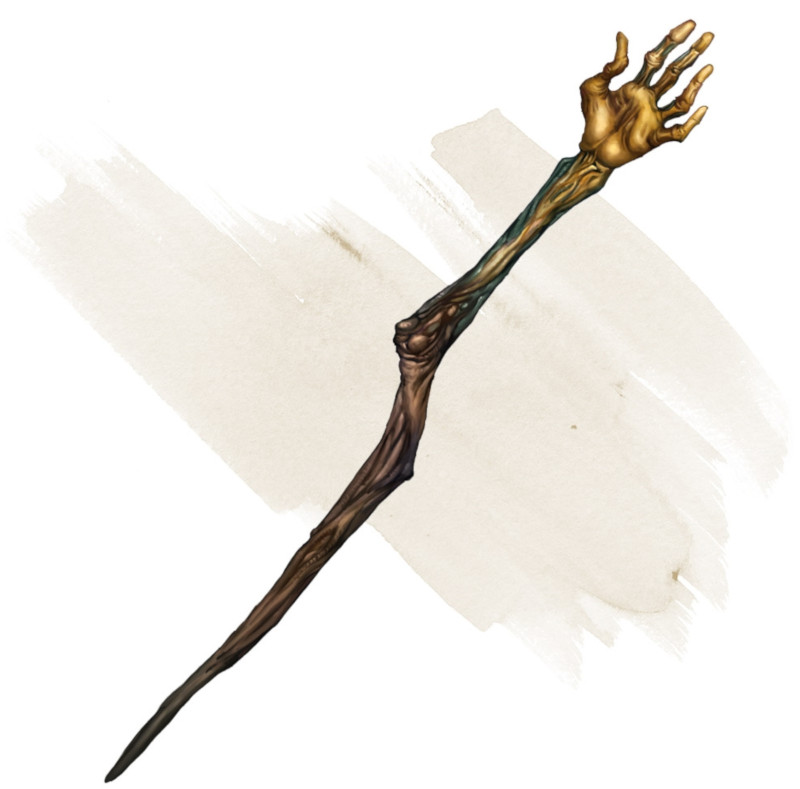

Bâton de flétrissement
Bâton, rare (nécessite un lien par un clerc, un druide ou un occultiste)
Ce bâton possède 3 charges et récupère 1d3 charges dépensées chaque jour à l'aube.
Le bâton peut être utilisé comme un bâton magique. Si l'attaque touche, il inflige les mêmes dégâts qu'un bâton normal, et vous pouvez dépenser 1 charge pour infliger 2d10 dégâts nécrotiques supplémentaires à la cible. En outre, la cible doit réussir un jet de sauvegarde de Constitution DD 15 ou avoir un désavantage pendant 1 heure à tous les jets de caractéristique ou de sauvegarde basés sur la Force ou la Constitution.
Le bâton peut être utilisé comme un bâton magique. Si l'attaque touche, il inflige les mêmes dégâts qu'un bâton normal, et vous pouvez dépenser 1 charge pour infliger 2d10 dégâts nécrotiques supplémentaires à la cible. En outre, la cible doit réussir un jet de sauvegarde de Constitution DD 15 ou avoir un désavantage pendant 1 heure à tous les jets de caractéristique ou de sauvegarde basés sur la Force ou la Constitution.
Dungeon Master´s Guide (SRD)
